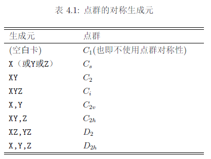
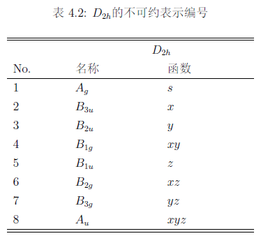
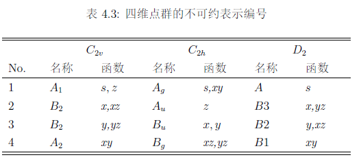
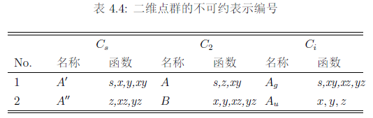

对称性（点群）
- MOLPRO只能使用阿贝尔点群对称性，对于有简并对称性的分子，必须使用阿贝尔子群，如下：

- 对于每个点群的不可约表示，编号为1至8，顺序如下表，表中还给出了x，y，和z乘积的转换特性。s表示各向同性函数，例如s轨道，另外，它还给出了这些群的x2，y2，和z2的转换特性：



- 轨道和基函数的引用格式一般是
序号.不可约表示编号，比如C2v的3.2表示C2v的第二个不可约表示B2的第三个轨道。
波函
定义
波函数的总对称性通过
wf卡定义：1
WF,nelec,irrep,spin
或
1
WF,[NELEC=nelec],[SYM[METRY]=irrep],[spin= spin],[CHARGE=charge]
nelec是电子总数，也可以通过charge指定。默认是核电荷的总和。irrep是波函数的对称性，用不可约表示的序号表示。默认是1全对称的（第一个不可约表示}- 对于一个双重态来说，它等于一个已占据的分子轨道的对称性。
- 如果是三重态，则是两个单占据轨道对称性的直积。（比如O2的最高单占据轨道分别为πg,x和πg,y，分别对应于B2g和B3g，直积为B1g，对称性为4。）
spin是单电子数。默认对偶数个电子是1（单重态），否则是2（双重态）。
也可以通过变量来定义（系统变量需要用SET）：
1
2
3
4SET,CHARGE=charge
SET,NELEC=nelec
SET,SPIN=spin
SER,SYMMETRY=irrep- 还可以使用
SCFSPIN和SCFSYM[METRY]、MCSPIN和MCSYM[METRY]、CISPIN和CISYM[METRY]来定义仅用于HF、MCSCF、MRCI的自旋和对称性。
- 还可以使用
因为有默认值，在很多情况下，不需要指定WF卡。如果需要指定，一般是在SCF计算中指定WF信息，后面的MCSCF或CI计算可以不指定WF；这也适用于续算。如果在命令输入区外给出WF指令，那么它作为全局指令处理。根据顺序执行。
例子
HCO+，2B2（一个电子从最高占据b2轨道失去）
1
wf,15,3,1
或
1
wf,charge=1,symmetry=3,spin=1
轨道子空间
定义
由
OCC，CORE，CLOSED，FROZEN卡提供：1
2
3
4OCC,m1,m2,...m8;
CORE,co1,co2,...co8;
CLOSED,cl1,cl2,...cl8;
FROZEN,fr1,fr2,...fr8;轨道空间也可以在命令区外定义，作为全局指令处理，即用于随后所有的程序。对某些波函类型特定的空间，可以使用以下两种方式定义：
1
OCC,4,2,1,CONTEXT=MULTI
或
1
OCC_MULTI,4,2,1
OCC，CORE，和CLOSED命令一般在每个有关的程序模块中都是必须的；但是程序会记住最近一次使用的值，因此如果不改变前面的轨道空间值的话，这些命令可以忽略。这一信息也保存在续算中。
含义
OCC：mi是不可约表示i的占据轨道数（包括CORE/FROZEN轨道和CLOSED轨道）CORE：芯轨道数CLOSED：cli闭壳层轨道数（包括芯轨道）FROZEN只能用于MCSCF程序，表示不做优化的冻芯轨道
通常OCC≥CLOSED≥CORE，不同的计算中，OCC，CORE，CLOSED，FROZEN的含义略有不同，默认的值也会有所不同：
- SCF中：
OCC是任何出现在CSF中的轨道
- MCSCF中：
OCC是任何出现在CSF中的轨道FROZEN轨道在所有CSF中都是双占据，并且冻结的（也就是不做优化）CLOSED表示所有的双占据轨道（FROZEN中冻结的加上做优化的）
- 电子关联方法（CI，MPn，CCSD等）中：
OCC表示在所有参考CSF中占据的轨道
- 在CI和CCSD程序中：
CORE是不做关联能处理的轨道CLOSED在所有的参考CSF中保持双占据的轨道。